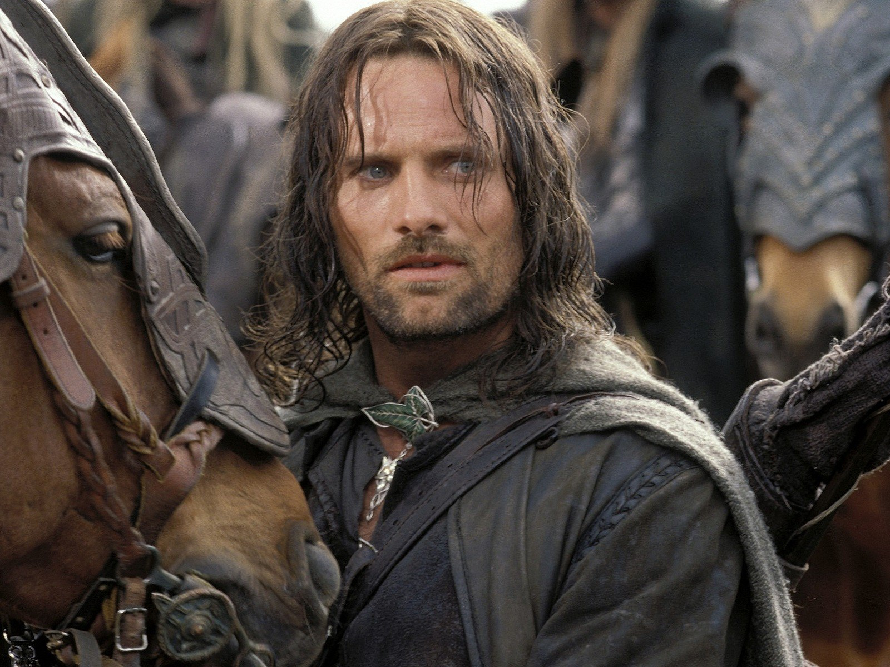

А́рагорн (синд. Aragorn), коронованный как Эле́ссар (кв. Elessar) — человек-дунадан, сын Араторна II и Гильраэн, шестнадцатый вождь Дунэдайн Севера, прямой потомок Исильдура, старшего сына Элендиля и последнего Верховного короля Дунэдайн, и единственный законный наследник трона Гондора. Третий и последний в истории Средиземья человек, вступивший в брак с эльфийской девой — его женой и королевой стала Арвен Ундомиэль, дочь Эльронда Полуэльфа.
Арагорн стал величайшим из людей своей эпохи — он возглавлял Людей Запада в войне против Тёмного Властелина Саурона и помог уничтожить Единое Кольцо Власти (был одним из девяти членов Братства Кольца), а после победы воссоединил королевства Арнор и Гондор в единое государство.
Арагорн II Элессар, 3019 год Т.Э.
Внешность
Арагорн был темноволосым (с проседью), сероглазым, худощавого телосложения. Его рост составлял 6 футов 6 дюймов (198 см). В целом, внешне Арагорн очень напоминал старшего сына Исильдура — Элендура, который погиб при поражении в Ирисной низине.
Происхождение
Арагорн родился 1 марта 2931 Т. Э. в семье вождя дунэдайн Араторна II. Его отец погиб в схватке с орками, когда Арагорну было всего 2 года. Гильраэн и маленький Арагорн бежали в Ривенделл и были приняты в доме Эльронда. Владыка эльфов взрастил Арагорна как своего сына. По совету Эльронда, происхождение мальчика держалось в секрете, так как Белому Совету стало известно, что Саурон разыскивает наследника Исильдура. Он получил имя Эстель («надежда» на синдарине). Во время своих дней в Ривенделле он был очень близок с сыновьями Эльронда, Элладаном и Эльрохиром. Он часто сопровождал их во время различных поездок, они научили мальчика многому.
Арагорн, Леголас и Гимли гонятся за отрядом Урук-Хаев, 3019 год Т.Э.
Цитаты
Интересные факты